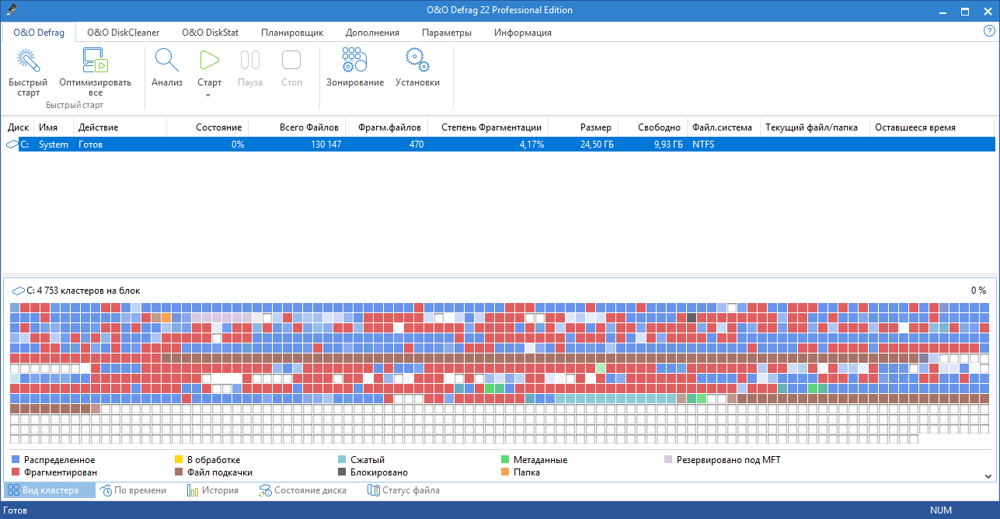
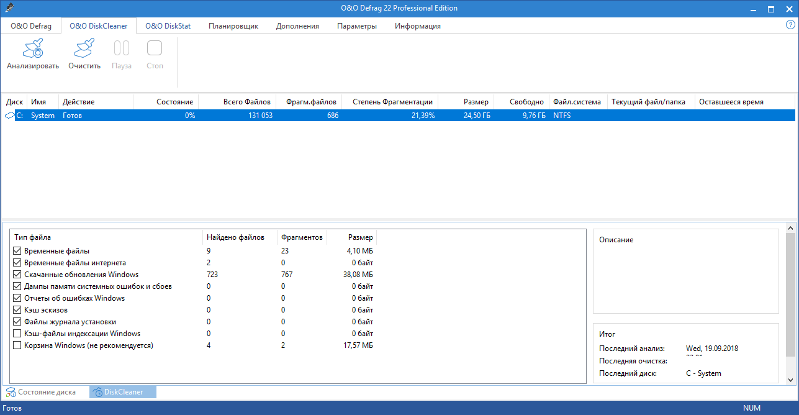
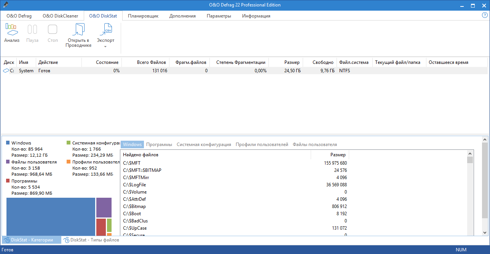
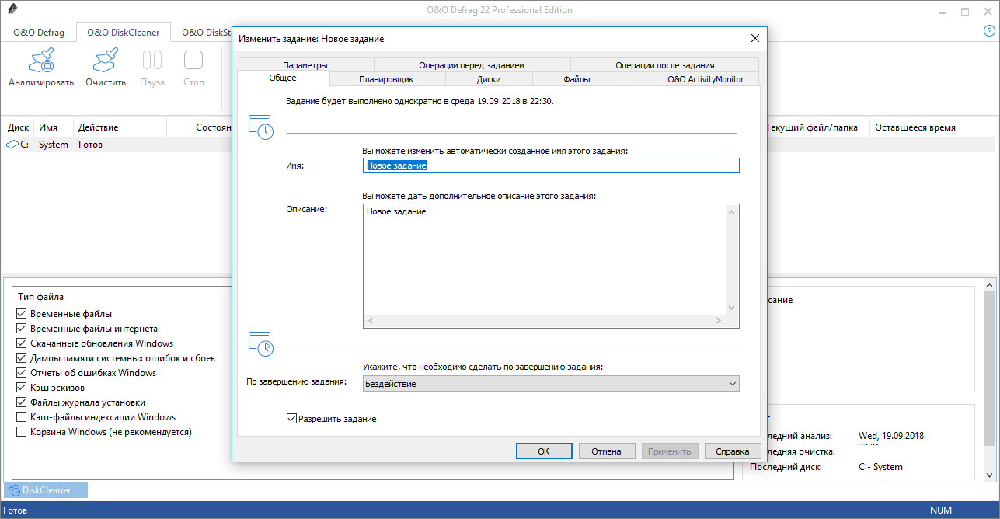

O&O Defrag Professional + Server 23.5 Build 5016

O&O Defrag is one of the best and most famous programs for defragmenting hard drives. It was developed by the German company O&O Software GmbH, which is famous for the quality of its products and has long been creating various software related to disk drives. In this defragmenter, I like the beautiful and thoughtful interface, the fine settings with which experienced users will be able to place their files in the way that they themselves think is right, and not the program. Of course, there are optimal presets for average users, there are a scheduler, reports, statistics and other functions that should be present in any good defragmenter..
General information:
   
×